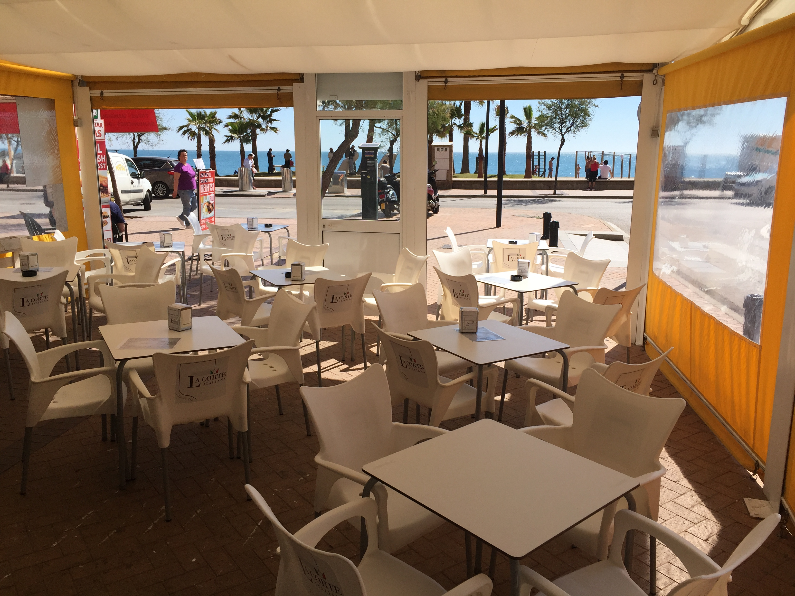
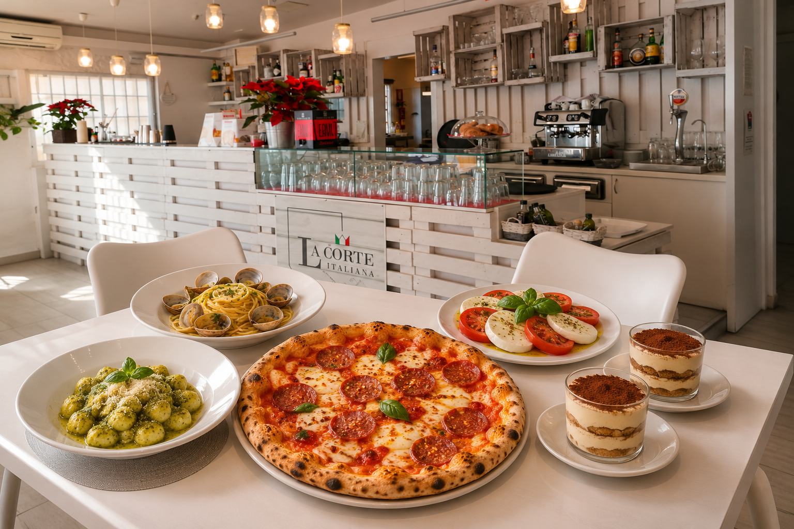
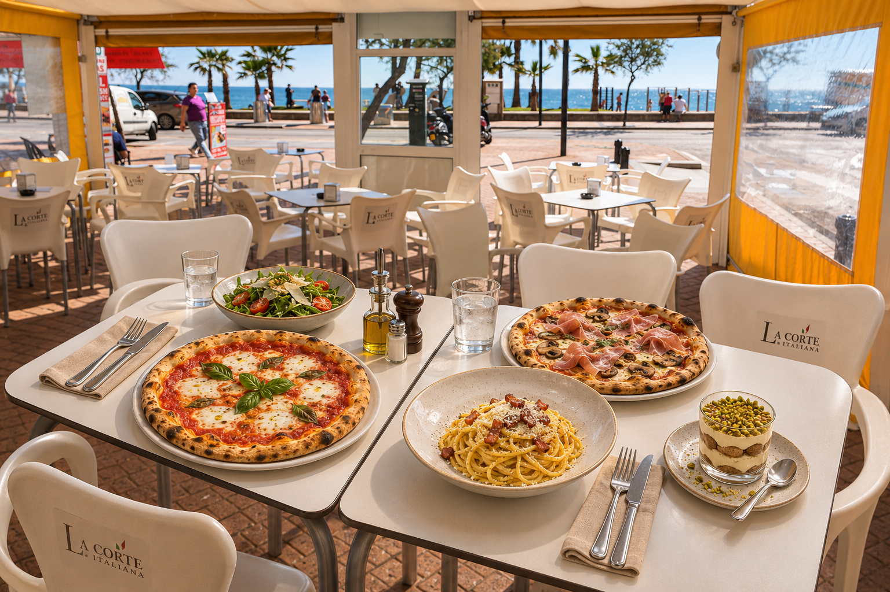

RISTORANTE · PIZZERIAFUENGIROLA, COSTA DEL SOL
LA DOLCE VITA, AQUÍ MISMO.01 PASTA & PIZZA
Pasta, pizza.
La Corte.
De la carbonara a tu pizza favorita.
Descubre nuestras pastas, las pizzas de la casa y los sabores de nuestra carta, junto al paseo marítimo de Fuengirola.
Elige tu plato ↗
02 A LA MESA
Nuestra
cocina.
Pasta · Pizza · DolciTodos nuestros sabores ↗
03 SIN FILTROS. CON MUCHO SABOR.
La Corte,
en vivo.
@lacorteitaliana ↗
Lo que sale de la cocina.
Lo que pasa en la mesa.
Desliza y quédate un momento.
Cargando momentos…
Vienen por la pasta.
Vuelven por todo.
“Duy Vinh Dang · Google ↗
Vimos al chef mezclando pasta dentro de una enorme rueda de queso. Teníamos que probarlo y estuvo a la altura.
★★★★★
01 / 03
FUENGIROLA · PASEO MARÍTIMO
Nos vemos
a la mesa.
Pizza, pasta y una mesa junto al mar.
El resto, lo ponemos nosotros.

01
02
Horario
Lunes, martes y jueves a domingo
12:00–23:00
Miércoles cerrado